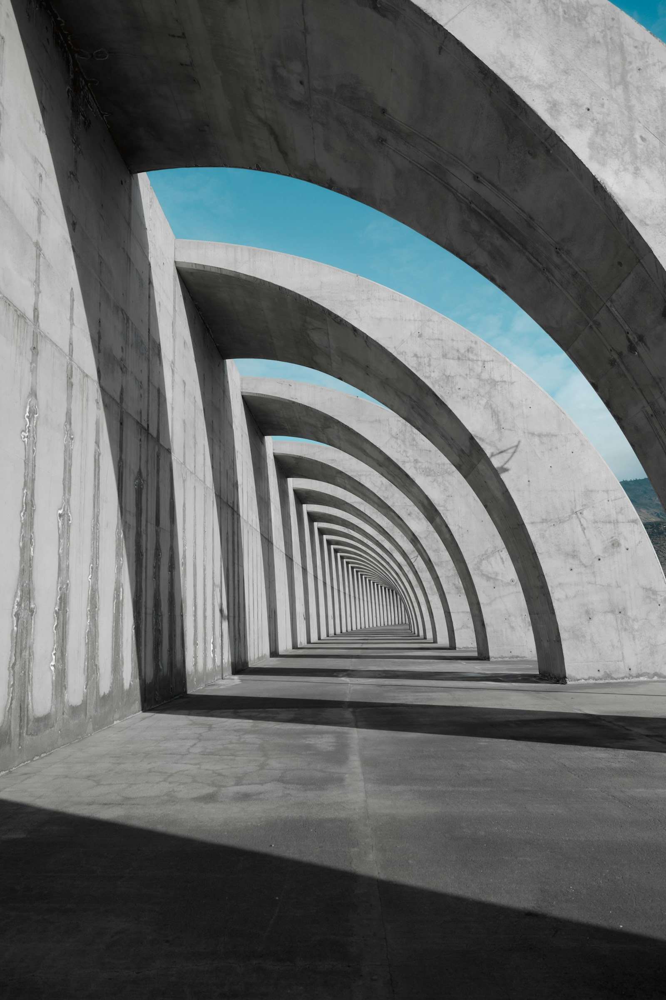
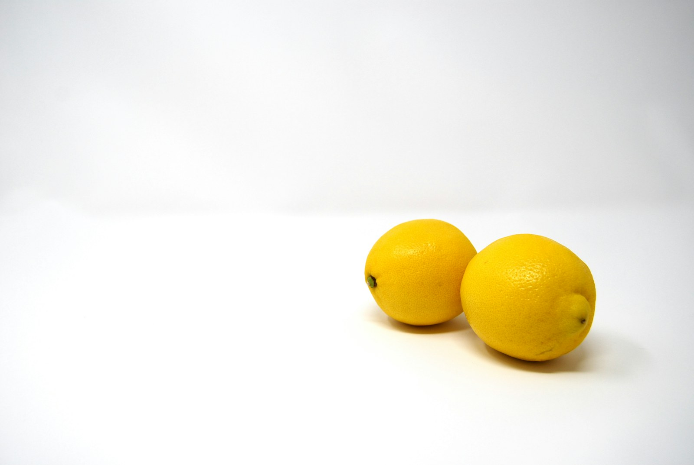
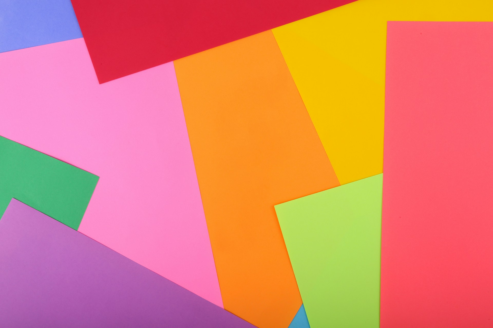
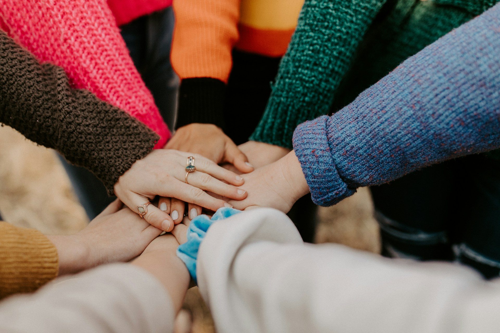

ARC
Branding · Self-initiated concept
Photo: Luke Thornton / Unsplash. Not commissioned by this fictional studio.
Thoughtful visual identities for ideas that deserve to be seen.
A fictional design studio and self-initiated portfolio study. Every project shown is concept work.

Self-initiated explorations across identity, packaging and the screen.
Branding · Self-initiated concept
Photo: Luke Thornton / Unsplash. Not commissioned by this fictional studio.

Packaging · Self-initiated concept
Photo: Missy Meyer / Unsplash. Not commissioned by this fictional studio.

Branding · Self-initiated concept
Photo: Giorgio Trovato / Unsplash. Not commissioned by this fictional studio.

Digital · Self-initiated concept
Photo: Hannah Busing / Unsplash. Not commissioned by this fictional studio.
Curiosity is the starting point. A clear idea is the through line. The result should feel unmistakably itself.
The studio approach